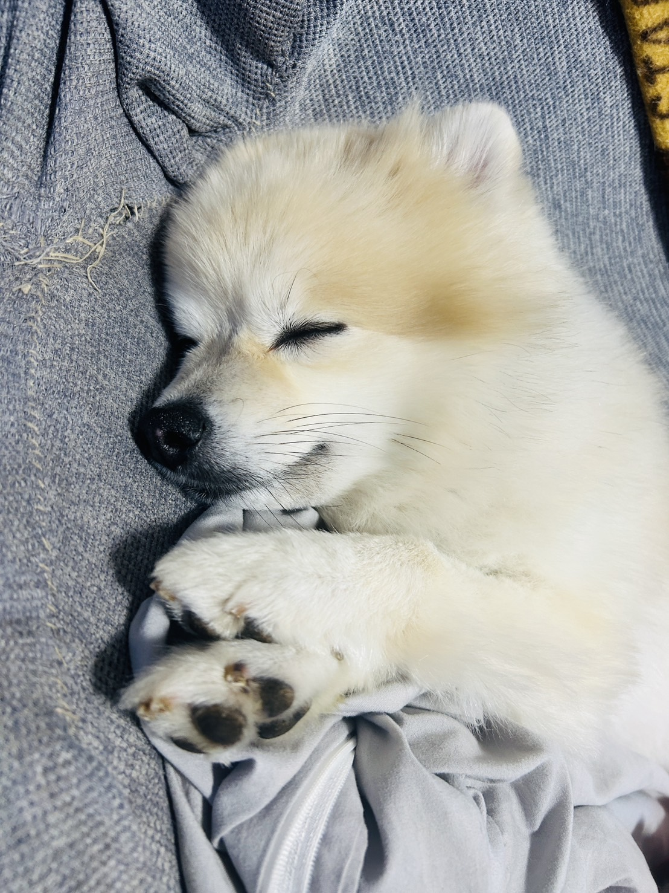
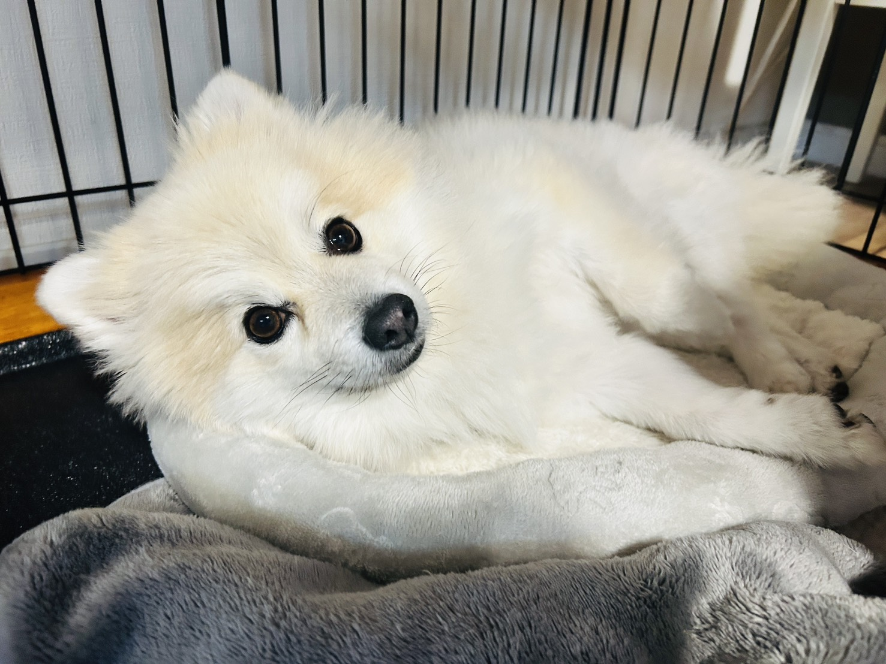
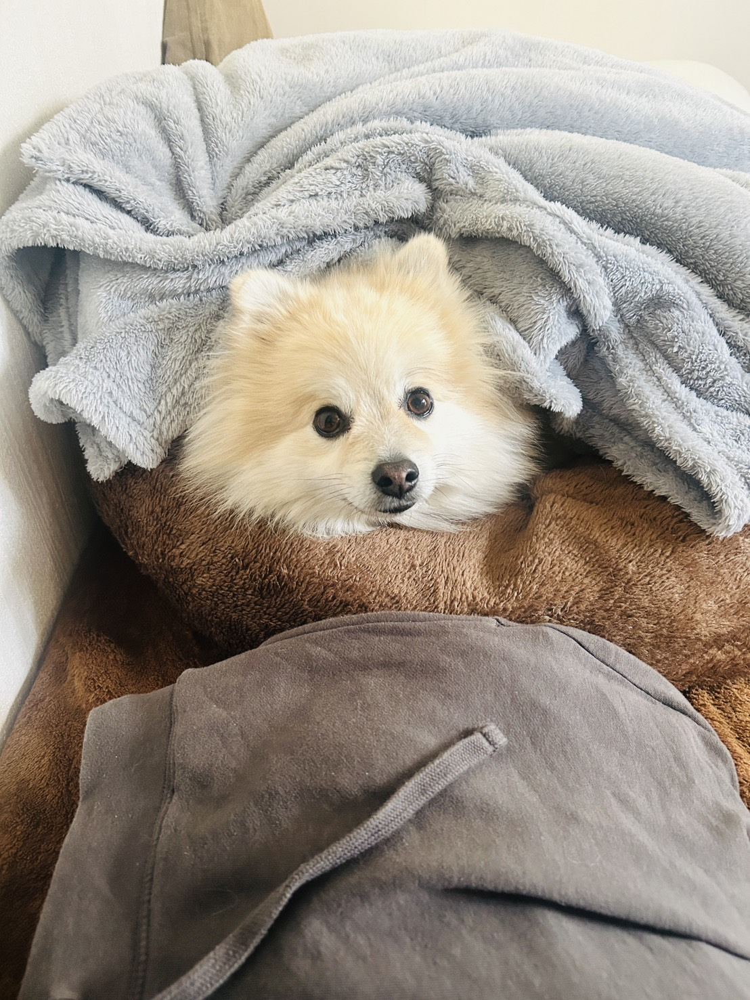

A quiet afternoon
with Loa.
ふわふわの白い毛と、
きりっとしたまなざし。
ポメラニアンとスピッツのミックス、通称ポメッツ。
毎日のかわいい瞬間を、写真と一緒にまとめています。
特別な出来事だけでなく、眠る顔やふとした仕草も、ロアらしさをつくる大切な一場面です。
日々の記録




A quiet afternoon
with Loa.
ポメラニアンとスピッツのミックス、通称ポメッツ。
毎日のかわいい瞬間を、写真と一緒にまとめています。
特別な出来事だけでなく、眠る顔やふとした仕草も、ロアらしさをつくる大切な一場面です。

